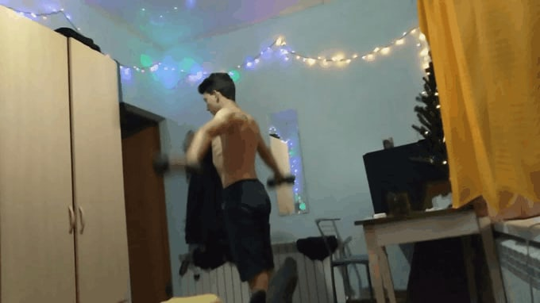
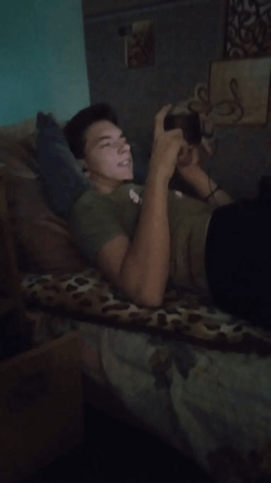

Большие бицепсы. Эта фотография была сделана в 2021 году.Тогда Андрюшка был на пике популярности.
Все началось с Горловки. Он жил там возле колбасного завода, который вонял. В 2013 году Андрюшка переехал в хутор Кубинский. Там и начала зарождаться будущая легенда Майкопа. Изначально являлся стеснительным мальчиком, боявшимся поднять руку на уроке, зная ответ. Несмотря на это, в глубине души Андрюшка жаждал доказать всем, что он не является куском обосанной какашки, поэтому, в 2020 году, когда он поступил в Майкопскую шарагу, отучась при этом целый первый курс, начал бороться с этим. 
Если брать во внимание 3д моделирование, то Андрей начал им заниматься еще в 7-8 классе.
Дальше дословный
отрывок из интервью 2018 года. Опрашиваемый - Андрей Лутков. Опрашивающий - -----
-"Слушай, а что это за петрушка такая, твой мармосет?" --------
-"Да ты заефал меня, какой мармосет?" - Андрей
-"Ну а чем ты там занимаешься дома, когда со школы приходишь?" -------
-"Мне Руся дал доступ к курсу по майе. По 6 часов смотрю стримы"
Уже в Майкопе Андрюшка продолжил заниматься тем делом. Потом он узнал, что такое кворк.
Потекли первые заказы на удаление водяных знаков. Денег было немного, зато мотивация огромна.
Дошло до того, что он заработал за 1 сутки 6к.
Андрюшка предпочитает тихую, размеренную жизнь без напряжений. Очень не любит, когда занимают его личное пространство и берут вещи. Этого не стоит делать, так как есть риск удариться об уголок кровати. В будущем он планирует создать свой бизнес на инфографике. Любит пюрешку с лангетами, макаронный суп и вафли яшкино.
Достоверных доказательств нет, но раньше длина волос Андрюшки составляла около 20-30 см от холки. На данный момент она составляет около 5 см.
Точно не известно, но имеются показания этого дэбила, Игоря. Так он утверждает, что в колледже у Андрея в группе были два пацаненка. Один Артемий Сидоренко(пидоренко), и Саня Самойлычев (придумайте сами шутку по теме фамилии).
Раджеб, Цыган, Переулок(достоверно неизвестно), Яна Дизайнер, Пацаны с кворка, Максим Круглов с магнита.